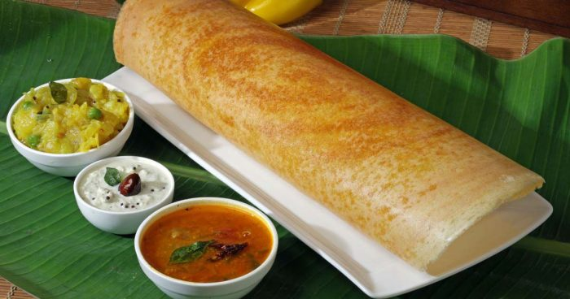

Paper Dosa Recipe

Rice and wheat are the top two grains consumed by Indians, with rice topping the list. Indians have taken this humble grain and transformed it into a plethora of sweet and savory dishes unlike any other culture in the world.
The humble Dosa is an ode to the unending love between the people of this country and rice. Dosa is the ever-popular South Indian breakfast of crispy crepes made with fermented rice and lentil batter. It is usually poured into a thin crispy crepe and served with a side of spiced mashed potatoes, lentil stew called sambar, and coconut chutney.
INGREDIENTS:
- Rice-3 Cup
- Split Urad Lentil -1 Cup
- Chana Lentil (Dal)-2 Tbsp
- Fenugreek Seeds (Meethi Dana) -1 Tsp
- Thin Poha/ Beaten Rice - 1/2 Cup
- Salt-as per your taste
- Water-as per required
- Oil-4 tbsp
DIRECTIONS:
- Firstly prepare the perfect dosa batter from this easy and simple step-by-step Batter Recipe for Dosa.
- Add 1 tsp salt into the batter and mix well.
- Heat a dosa Tawa on high flame.
- To check if tawa is hot enough, sprinkle or spray some water on the dosa tawa, the water should sizzle away and evaporate immediately.
- Further, clean the tawa with a cotton cloth.
- When the dosa tawa is hot enough pour a ladle of batter in the center of the hot tawa.
- Immediately begin to spread the dosa batter from the center moving your hand in the circular motion (clockwise or anticlockwise direction) and making circles until you reach the edges i.e. spread it like regular dosa.
- Try to spread it as thin as possible.
- You can make thin or thick dosas with this batter as per your choice.
- Now drizzle some oil around the edges and also in the center.
- Let the dosa cook for few minutes until the bottom of the dosa starts appearing golden brown.
- Tip for Crispy Dosa: You need to cook only one side ofF the dosa, this will make the dosa very crispy.
- Further, Scrape the sides of the dosa to release it from the pan and fold as per pic.
- Now transfer the crispy plain dosa to a plate.
- Immediately Serve the crispy and yummy Plain Dosai or Paper Dosa in Tamil style with hot and tangy Sambar, Coconut Chutneys.
Return home